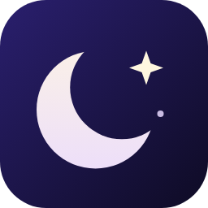

Theme
Shared theme for Nyx, the open-source dark mode for Safari
The Evening Edition
A preview of how websites look with this theme.
Don’t have Nyx? Get it from github.com/mohsen1/nyx. The link format is compatible with Noir’s theme links.